Fbx 模型导入与 Unity 脚本
Fbx 三要素
一个 Fbx 模型文件，最少包含三样东西：
| 要素 | 定义 | 决定什么 |
|---|---|---|
| Mesh 网格 | 顶点 + 三角面 | 物体的形状 |
| Material 材质 | 表面光学属性 | 物体的质感 |
| Texture 贴图 | 像素颜色图（如 tga） | 物体表面的图案 |
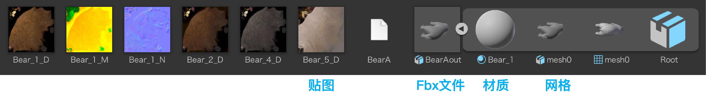

导入 Fbx 流程

- 在 Project 里建一个
Models文件夹 - 把
.fbx文件直接拖进Models文件夹 - 再把模型从 Project 拖到 Scene 视图 → 场景中多了一个游戏对象
- 在 Hierarchy 里选中它，可改名、调 Transform

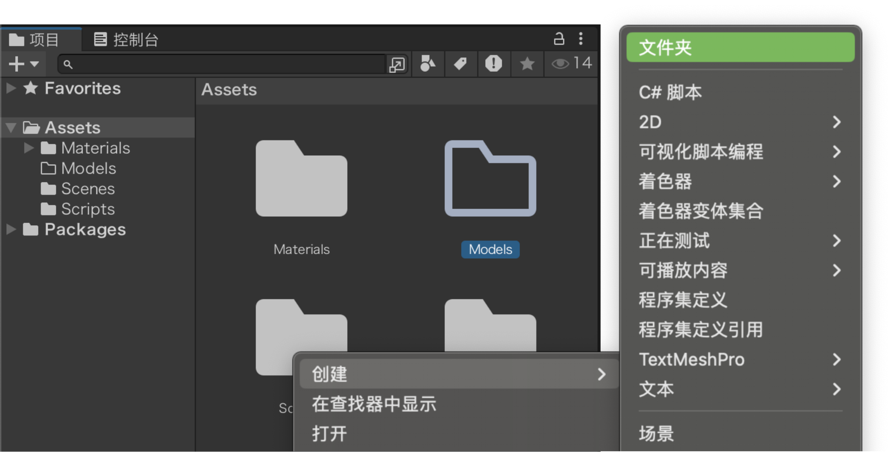
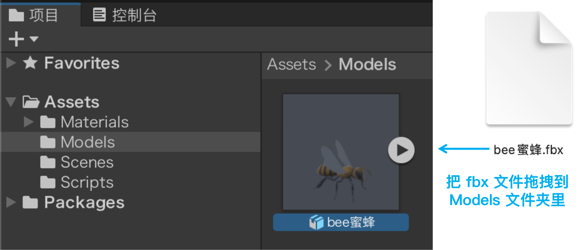
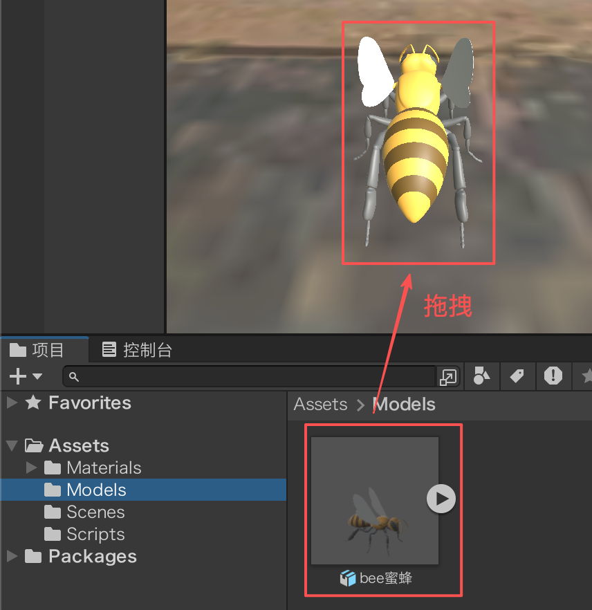
预览与缩放模型
- 预览：选中 fbx，Inspector 顶部可看它包含的网格、材质等大图预览
- 放大 / 列表：Project 底部滑动轴，拉到最右看大图，最左看列表


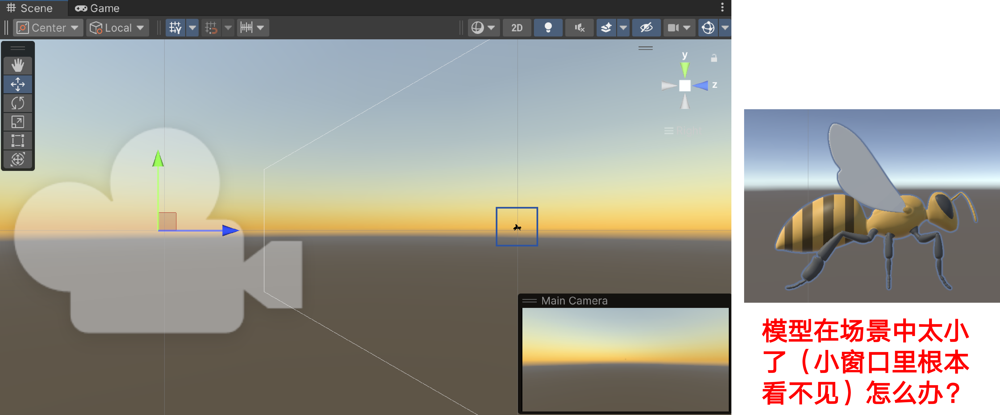
模型太小看不见？
- 选中场景里的模型，把 Transform 的 Scale 三个轴都 ×10（放大 10 倍）
- 再调整一下摄像机位置就能看清

三维度同步缩放
Transform 的 Scale 有 X / Y / Z 三个轴。点开缩放属性旁的 Enable constrained proportions（约束比例，链条图标），三个维度就会同步设置——改一个轴，另外两个跟着等比例变，模型不会被拉变形。

替换导入模型的材质与贴图
把模型拖进场景后，它的外观不是写死的——材质、贴图都能换。先直观看一个例子：

先分清：材质 vs 贴图
- 材质（Material） = 物体表面的「光学配方」：颜色、金属度、光滑度……决定质感。
- 贴图（Texture） = 贴进材质的像素图，决定表面的图案（木纹、砖缝、熊的毛色）。
一句话：贴图是材质的「输入」，材质靠贴图长出图案。换贴图 = 改材质里的某个槽位。
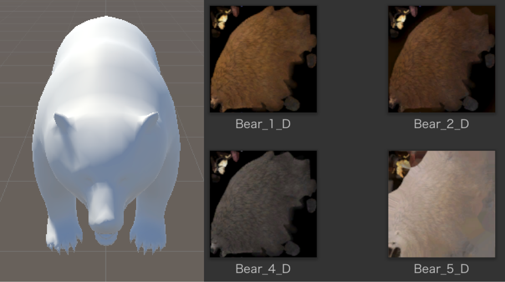
一个模型往往配套一组贴图——像这只熊，一张贴图就能盖住整个身体。上面这张就是熊模型配套的 4 张 tga，它们是4 种不同皮肤（不同外观）：换哪张，熊就换一身颜色。导入的 Fbx 模型自带贴图多为 .tga 格式（建模软件 / 资源包导出习惯），png / jpg 同理，换成其他格式操作完全一样，下面以 tga 演示。
方法一：直接把贴图拖到物体上（最省事）
在 Hierarchy 或 Scene 视图里先选中游戏对象，再把贴图（这里就是那张 tga）从 Project 窗口拖到它上面，Unity 会在该贴图所在目录下自动建一个 Materials 文件夹（没有就新建），并把生成的材质放进这个文件夹、把这张贴图填进材质的反射率（Albedo）槽。这是任意图片格式通用的行为。

拖进去后，Unity 自动生成的材质被应用到了 Inspector 的 反射率（Albedo） 槽——也就是说，无论用哪种方式，贴图都是借助「材质」这个中间层贴到模型上的：

方法二：把贴图拖到反射率槽（更精准）
更可控的做法——先有材质，再把贴图直接拖到 Inspector 的 反射率（Albedo） 槽，立刻修改这个材质的外观，连材质都不用你手动建。想同时调金属度 / 光滑度，也在材质面板里调。

回看课件7：殊途同归
课件7 的做法：先建一个材质，再把各类贴图分别拖进对应槽位——颜色图进反射率（Albedo）、法线图进法线槽、高度图进高度槽……
本课的做法：直接把贴图拖到物体上，Unity 自动建好材质并填进反射率。
两条路起点不同、终点一样：贴图最终都进材质的属性槽，靠「材质」这个中间层贴到模型上。
Poly Haven · 去哪找免费模型
Poly Haven 免费资源网站
打开浏览器访问 https://polyhaven.com/zh，这是一个完全免费、可商用的 3D 资源网站，可下载贴图、HDRI 和模型。

下载模型并导入 Unity
按下面 6 步把免费模型下载并导入 Unity：
找模型 · 中文界面与筛选
- 步骤一：在网站顶部点击右上角「国旗」按钮，选择「中文」，网页切换为中文显示
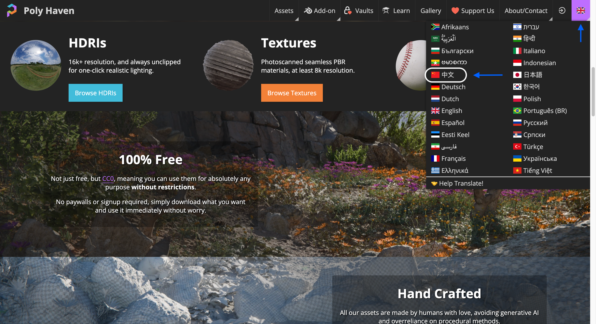
- 步骤二：在网站顶部选择「模型」

- 步骤三：在模型列表里选一个目标模型，可按类别筛选，比如「交通工具与运输」→「水上交通工具」→「帆船」

下载、解压、导入工程
- 步骤四：进入详情页，点 Download（下载），格式选 fbx，分辨率任选（如 1K / 2K）
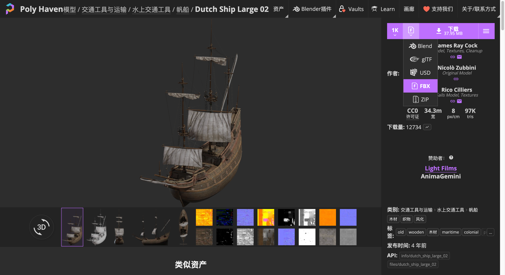
- 步骤五：解压下载包，把 fbx 与配套贴图放进项目
Assets或Models文件夹；若弹出「NormalMap 设置」窗口，点击 Fix now

- 步骤六：把 fbx 从 Project 拖到 Scene / Hierarchy 即可使用

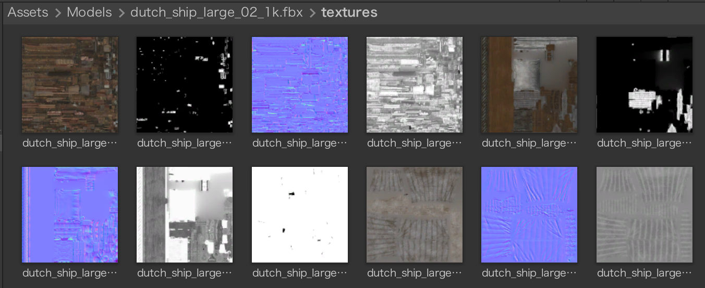
写第一个 C# 脚本 · 从建文件夹到类名一致
前面讲完模型与贴图，接下来让模型动起来、有逻辑。做法是：写一段 C# 脚本，挂载（Mount）到游戏对象上，脚本就成了它的「行为组件」——每一帧告诉引擎这个对象该往哪走、该做什么。
① 新建 Scripts 文件夹
在 Project 窗口 Assets 下，右键 → Create（创建） → Folder（文件夹），命名为 Scripts。

② 创建 C# 脚本
在 Scripts 文件夹里右键 → Create（创建） → C# Script（C# 脚本），命名为 MoveObject。
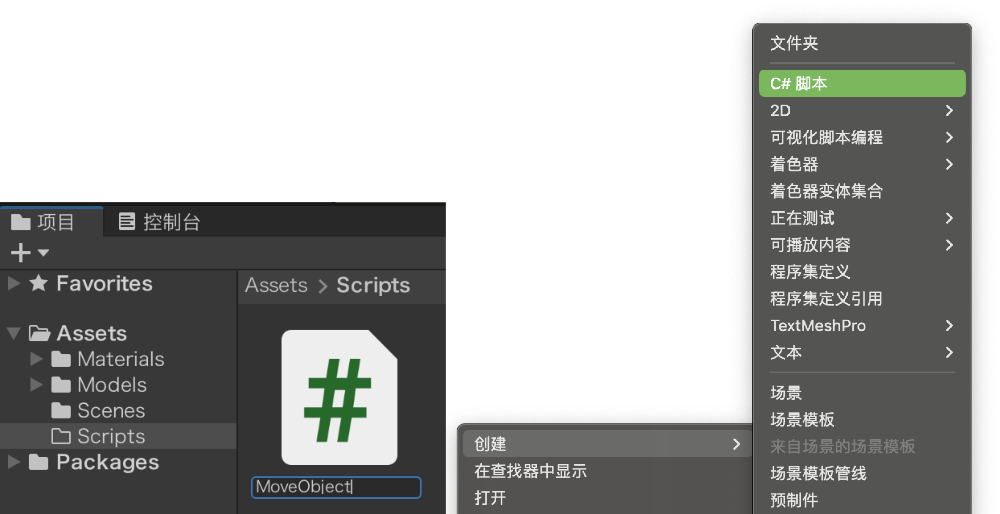
③ 重命名 + 类名必须与文件名一致
创建时直接重命名（可连点两次脚本文件名进行重命名）。Unity 靠文件名找类——类名（class 后的名字）必须和文件名完全相同，否则挂载时会控制台报错；改了文件名，也要回代码把 class 后的名字一起改掉。双击脚本文件可打开编辑器查看脚本内容。

using System.Collections;
using System.Collections.Generic;
using UnityEngine;
public class MoveObject : MonoBehaviour {
void Start() { }
void Update() { }
}脚本的生命周期 · 谁在调用 Start 与 Update
本页要做什么：上一页把脚本挂到了船模型上。这一页先弄清一件事：我们写的 Start()、Update()，是谁、在什么时候喊它们跑的——这就是「生命周期」。
① 先回看脚本：Start / Update 在哪被调用？
前面挂在船模型上的脚本 MoveObject，只定义了下面两个方法：
Main 那样的入口。可游戏一运行，它们却在跑！② 谁在喊它们跑？
答案不在你写的代码里：是 Unity 引擎在运行游戏时，按一套固定的时刻表，自动去调用挂在游戏对象上的脚本方法。这套"引擎在什么时候、按什么顺序喊你的代码干活"的规则，到底叫什么、又长什么样？下面正式揭晓。
Start() / Update()
下面先把这条规则讲清楚，等会儿运行游戏、看 Console 打印的日志，你就能亲眼验证。
③ 什么是生命周期？
一个脚本组件从"被加载"到"被销毁"，引擎会自动按固定顺序调用一系列方法（包括你写的 Start() / Update()，以及更多内置回调）。这套规则就叫做 脚本组件的生命周期。把它想成一条引擎替你自动跑的流水线——你只要在对应方法里写代码，到那个时刻它就被调用：
Start / Update）不是你新发明的方法，而是脚本默认就有的生命周期回调——你只往里填"要做什么"，引擎到对应时刻就自动调用；其余是引擎在更细时刻点也会调用的回调。生命周期各阶段与对应代码
最常用两个：
Start()：场景加载后、第一次Update之前调用一次，写初始化代码Update()：每一帧渲染前调用，大部分游戏逻辑写在这里
// MoveObject.cs —— 只写上 Start / Update 两个最常用的回调（完整脚本）
// 整段可以直接复制、覆盖原文件；标 ① 的是这一页新加的
using UnityEngine;
public class MoveObject : MonoBehaviour {
void Start() {
Debug.Log("船启动！"); // ① 新增：游戏开始时只执行一次
}
void Update() {
// 每帧执行
}
}其它几个回调：
| 回调 | 调用时机 | 时机示意（截图） |
|---|---|---|
Awake() | 脚本实例被加载时调用一次，早于所有 Start | — |
FixedUpdate() | 固定时间间隔调用，物理代码写这里 | — |
OnEnable() | 对象变为激活状态时 |  |
OnDisable() | 对象变为非激活状态时 |  |
// MoveObject.cs —— 六个生命周期回调全写上（完整脚本）
// 整段可以直接复制、覆盖原文件；标 ①②③④ 的是这一页新加的
using UnityEngine;
public class MoveObject : MonoBehaviour {
void Awake() { // ① 新增：脚本被加载时调用一次，最早，早于所有 Start
}
void OnEnable() { // ② 新增：对象变为激活状态时调用
}
void Start() {
Debug.Log("船启动！");
}
void Update() {
// 每帧执行
}
void FixedUpdate() { // ③ 新增：固定时间间隔调用，物理相关代码写这里
}
void OnDisable() { // ④ 新增：对象变为非激活状态时调用
}
}⑤ 游戏对象有生命周期吗？
严格说，游戏对象本身没有"生命周期"——它只是个装组件的容器（下面这张图看得更清楚）。但挂在它上面的脚本组件有，原因就一句话：你写的脚本 MoveObject 继承自 MonoBehaviour（回看①里的 public class MoveObject : MonoBehaviour）。
那这套回调什么时候、被谁触发？机制写在 MonoBehaviour 的内部实现里——你只需重写 Start() / Update() 等钩子，Unity 引擎运行时就会按固定顺序，向每个激活的游戏对象上的每个 MonoBehaviour 组件发送这些消息；对象被激活 / 停用，就触发组件的 OnEnable / OnDisable。
用④刚讲的这几个回调，套回我们的船模型再理解一遍：
⚓ 船起航（激活） → 被
OnEnable 叫醒、就位待命；🌅 第一次出港（Start） → 跑一次"开工点名"；
🔁 之后每一帧（Update） → 不停巡逻、干活；
🛏️ 船停泊（停用） → 被
OnDisable 叫去休眠。所以通俗地说：船上的脚本，运行时有一套生命周期；根子则在 MonoBehaviour。
用日志看清脚本在干什么 · Debug.Log
Debug.Log() 把信息实时打到 Console（控制台）。调试脚本时，常用它打印：模型名（this.name）、坐标（transform.position）、时间（Time.time / Time.deltaTime）。下面在 Start() 里打印船模型名和初始坐标，在 Update() 里打印每帧的时间差：
// MoveObject.cs —— 用 Debug.Log 把运行情况打到控制台（完整脚本）
// 整段可以直接复制、覆盖原文件；标 ①②③ 的是这一页新加的
using UnityEngine;
public class MoveObject : MonoBehaviour {
void Start() {
Debug.Log("船启动！");
Debug.Log("模型名：" + this.name); // ① 新增：this.name → 对象名
Debug.Log("初始坐标：" + transform.position); // ② 新增：transform.position → 世界坐标
}
void Update() {
// deltaTime：距上一帧的时间差；帧率不同也能稳定观察
Debug.Log("帧间隔：" + Time.deltaTime); // ③ 新增：每帧都打一条
}
}transform.position.ToString("F3")。运行后 Console 会刷屏——调试完记得删掉或注释掉 Update() 里的日志。运行游戏，看控制台打印日志
Unity 顶部播放工具条有三个按钮：运行（▶）、暂停（⏸）、单帧（⏭）。点击"运行"后，引擎按上面的生命周期调用脚本——先 Awake → Start，再每帧 Update，Debug.Log() 的内容实时出现在 Console 窗口；再次点击"运行"按钮即停止。写完代码记得先 Ctrl + S 保存再切回 Unity。

游戏对象、组件与常用 API
本页要做什么：上一页知道脚本靠生命周期自动运行；要让船模型动起来，得先搞清楚"对象身上有什么、怎么从脚本访问它"。改它的 API——Transform 怎么改位姿、Time 怎么控节奏——留到下一页，正好接上本章的匀速移动。
本页讲两块：
① 游戏对象由组件拼成
② 从脚本访问模型对象信息
① 游戏对象由组件拼成
一个模型在 Unity 里就是个游戏对象（Game Object）——本质是个"容器"。想赋予它能力，就是往上面加组件：控制位姿的是 Transform，加行为的是 Script（就是上一页的 MonoBehaviour），其它组件各管一摊（参考原课件）：
| 组件 | 负责的能力 | 组件截图 |
|---|---|---|
Transform | 位置（Position）/ 旋转（Rotation）/ 缩放（Scale）——物体的"位姿" |  |
Mesh Renderer | 把网格（Mesh）渲染成可见物体，并设置材质 | 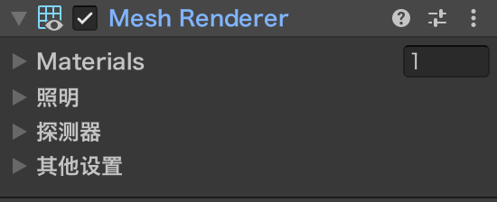 |
Rigidbody | 物理效果：重力、碰撞、动力学 | 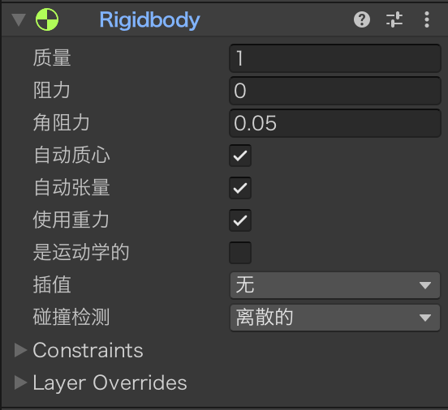 |
Collider | 碰撞检测，让物体能互相碰到 | 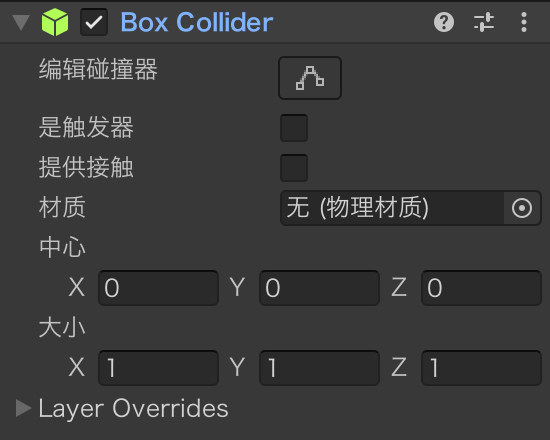 |
Script（MonoBehaviour） | 用 C# 写自定义行为，挂到对象上就生效 | 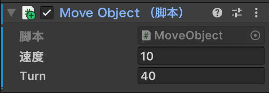 |
Transform；让它有逻辑，用的就是 Script。② 从脚本访问模型对象的信息
脚本挂在对象上，从代码里可以拿到"自己"、所属对象和组件，也能读取它的各种信息。常用的写法与含义如下：
| 写法 | 代表什么 | 截图 |
|---|---|---|
this | 当前这个脚本组件自身（MonoBehaviour） | 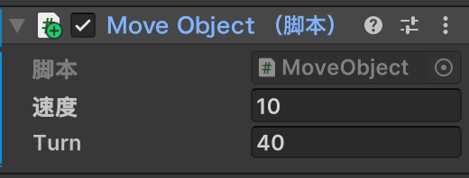 |
gameObject | 它所属的游戏对象 |  |
transform | 它所属的游戏对象上的 Transform 组件（最常用） | 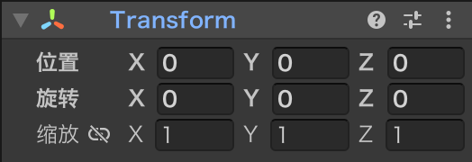 |
↳ transform.position | 世界坐标（Vector3）—— 物体在场景里的"地址"：从世界原点 (0,0,0) 指向它的三维坐标 (x,y,z) |  |
↳ transform.eulerAngles | 旋转角度（单位：度）—— 物体绕 X / Y / Z 轴各转了多少度，眼睛能直接看出来 | 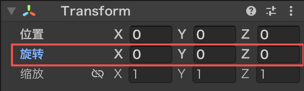 |
↳ transform.localScale | 本地缩放（Vector3）—— 物体的"大小倍率"：相对原始模型放大 / 缩小多少倍（x,y,z 三轴可独立） | 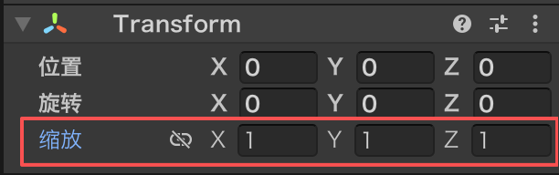 |
this.name | 对象的名字（Hierarchy 中显示的名称） |  |
gameObject.activeSelf | 是否激活（true / false） |  |
this.tag | 标签（字符串，用于分类、查找对象） | 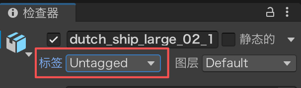 |
this.gameObject.layer | 层级（整数 0–31，用于摄像机剔除、射线检测） |  |
呼应上一页 Debug.Log 里我们用过的 this.name 和 transform.position；下面在 Start() 里把它们一并打印出来看看：
// MoveObject.cs —— 把对象身上的各项信息一次打印出来（完整脚本）
// 整段可以直接复制、覆盖原文件；标 ① 的是这一页新加的
using UnityEngine;
public class MoveObject : MonoBehaviour {
void Start() {
// this = 当前脚本组件；gameObject = 所属对象；transform = 它的 Transform
Debug.Log("名字：" + this.name); // ① 新增：下面这一串都是同一个写法
Debug.Log("标签：" + this.tag);
Debug.Log("层级：" + this.gameObject.layer);
Debug.Log("是否激活：" + gameObject.activeSelf);
Debug.Log("位置：" + transform.position);
Debug.Log("旋转：" + transform.eulerAngles);
Debug.Log("缩放：" + transform.localScale);
// 运行时开关对象：gameObject.SetActive(false);
}
}
上面用到的 transform 是 Unity 给的"快捷方式"（每个对象都自带）。想拿别的组件——比如 Rigidbody、MeshRenderer，或你写的另一个脚本——就要用通用接口 GetComponent<T>()：
// MoveObject.cs —— 用 GetComponent<T>() 拿别的组件（完整脚本）
// 整段可以直接复制、覆盖原文件；标 ①② 的是这一页新加的
using UnityEngine;
public class MoveObject : MonoBehaviour {
void Start() {
Rigidbody rb = GetComponent<Rigidbody>(); // ① 新增：拿到同对象上的 Rigidbody
rb.AddForce(0, 10, 0); // ② 新增：给它一个向上的力
}
}transform = 不用写 GetComponent 的"常驻快捷方式"；其它组件 = GetComponent<组件类型>() 现取现用。让船动起来 · 移动的本质与向量
本页要做什么：上一页认识了「对象由组件拼成、能从脚本读取它的信息」。这一页先弄清「让船动起来」到底在改什么，再认识改它要用的 向量 Vector3——位置、方向、速度在脚本里都是它。先看效果：

移动的本质（看着简单，其实有坑）：让船动起来，就是每一帧偷偷改一点点它的位置（或转一点角度）。
匀速移动 = 三件套凑齐 👇
- ① 向量 Vector3：先搞清"位置 / 方向"长啥样
- ② Transform：再找对"改位置"的扳手（就是它）
- ③ Time.deltaTime：把"每帧"换算成"每秒"，跟帧率脱钩
三步齐活，才能写出稳稳的匀速运动 ✅
向量：位置、方向、速度都是向量
Unity 里三维空间的位置、方向、速度都是向量。常用类型：
Vector2（x, y）：平面坐标Vector3（x, y, z）：三维空间坐标，最常用
// MoveObject.cs —— 向量字段的两种赋值方式（完整脚本）
// 整段可以直接复制、覆盖原文件；标 ①②③ 的是这一页新加的
using UnityEngine;
public class MoveObject : MonoBehaviour {
public Vector3 position1 = new Vector3(1, 2, 2); // ① 新增：声明时就赋值（实例化时赋值）
public Vector3 position2 = new Vector3(); // ② 新增：先建一个 (0,0,0)，之后再填
void Start() {
position2.x = 1; position2.y = 2; position2.z = 2; // ③ 新增：逐个分量赋值
}
}Unity 还内置了一组方向 / 位置常量，直接写、不用手算：
| 常量 | 值 | 含义 |
|---|---|---|
Vector3.zero | (0,0,0) | 原点，常作初始位置 |
Vector3.one | (1,1,1) | 各轴统一缩放 / 操作 |
Vector3.up | (0,1,0) | 向上方向 |
Vector3.down | (0,-1,0) | 向下方向 |
Vector3.left | (-1,0,0) | 向左方向 |
Vector3.right | (1,0,0) | 向右方向 |
Vector3.forward | (0,0,1) | 向前方向（最常用） |
Vector3.back | (0,0,-1) | 向后方向 |
常用方法（游戏里最爱用这几个）：
Vector3.Distance(a, b)：两点之间的距离（用transform.position演示见 ②）Vector3.Lerp(a, b, t)：从 a 到 b 的线性插值（t 取 0~1）Vector3.MoveTowards(a, b, step)：从 a 朝 b 每步移 stepVector3.Angle(a, b)：两向量的夹角（度）vector.normalized：把向量长度归一化成 1（只留方向）Vector3.ClampMagnitude(v, max)：限制向量长度不超过 max
transform · 改位置与旋转
回到 Unity 看一眼就明白了：每个对象都挂着 Transform 组件，里面的 Position（位置）、Rotation（旋转）、Scale（缩放），每个都是 (x, y, z) 三个数——它们正是三个向量。
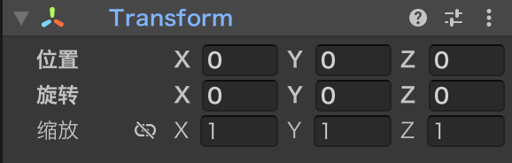
Transform 组件方法（改位置 / 旋转）
所有位移、旋转都通过修改 Transform 实现，且按帧计算。脚本里用 transform 就能拿到它；常用写法：
// MoveObject.cs —— 三种改位姿的写法，全都写在 Update 里（完整脚本）
// 整段可以直接复制、覆盖原文件；标 ①②③ 的是这一页新加的
using UnityEngine;
public class MoveObject : MonoBehaviour {
void Update() {
// ① 新增：直接改位置（赋一个新坐标）
transform.position = new Vector3(0, 1, 0);
// ② 新增：增量移动——往"对象自身的前方"移动 1 个单位（本地 +z 轴，Unity 里的蓝色箭头）
transform.Translate(0, 0, 1);
// ③ 新增：增量旋转——绕 y 轴转 90 度
transform.Rotate(0, 90, 0);
}
}transform.position：对象的位置（世界坐标）transform.Translate(x, y, z)：在当前基础上增量移动transform.Rotate(x, y, z)：在当前基础上增量旋转
transform.position 本身就是一个 Vector3，所以它既能被读取（拿去计算）、也能被修改（让对象移动）——下面各看一个例子。用法一「读取计算」：既然是向量，就能用上一页学过的向量方法。比如算"自己离目标对象还有多远"：
// MoveObject.cs —— 用向量算「自己离目标还有多远」（完整脚本）
// 整段可以直接复制、覆盖原文件；标 ①② 的是这一页新加的
using UnityEngine;
public class MoveObject : MonoBehaviour {
public Transform target; // ① 新增：目标对象，在检查器（Inspector）里把目标拖进来
void Start() {
// transform 是 MonoBehaviour 自带的属性，不用自己声明
// target 是你声明的字段；target.position = 目标对象的位置
float d = Vector3.Distance(transform.position, target.position); // ② 新增：算两点直线距离
}
}这句在算什么：Vector3.Distance(a, b) 返回两点 a、b 之间的直线距离（一个 float 数）；transform.position 是"自己"的位置，target.position 是目标对象的位置。合起来 d = 自己离目标还有多远——常用来判断"够不够近、该不该触发某事"。
用法二「修改移动」：把上面刚学的 transform.Translate 用起来——它除了能传三个数，也能直接吃一个位移向量。而这个向量怎么来？记住一句：速度 = 方向 × 大小——算出这一帧该位移多少，交给它去挪对象（真正的匀速写法要乘 Time.deltaTime，后面单独讲）：
// MoveObject.cs —— 把「方向 × 大小」交给 Translate（完整脚本）
// 整段可以直接复制、覆盖原文件；标 ①②③④ 的是这一页新加的
using UnityEngine;
public class MoveObject : MonoBehaviour {
public Vector3 direction = Vector3.forward; // ① 新增：移动方向
public float speed = 0.01f; // ② 新增：每帧移动大小（注意是「每帧」，不是「每秒」）
void Update() {
// 方向 × 大小 = 这一帧的相对位移
Vector3 step = direction * speed; // ③ 新增
transform.Translate(step); // ④ 新增：按向量平移对象
}
}
🎥 操作教学：对齐到视图（Align With View）
运行脚本前，建议先把摄像头（Main Camera）的视角对齐成你当前在场景里看的角度，否则一按播放，游戏视图可能和你想看的角度不一样、甚至看不到船。做法：
- ① 在 Hierarchy 窗口里选中 Main Camera（摄像头）；
- ② 顶部菜单栏 游戏对象（GameObject）→ 对齐到视图（Align With View）。
执行后，摄像头的位姿会瞬间跳到场景视图当前的视角——也就是游戏视图对齐到了场景视图：你场景里怎么看，运行时就怎么看（快捷键 Ctrl / Cmd + Shift + F）。

Time.time 与 Time.deltaTime
Time 方法（控制每帧节奏）
为什么需要 Time？Update() 每帧执行一次，但每帧之间隔多久并不固定——帧率越高，每帧间隔越短。所以要用 Time 类把"帧"换算成"真实时间"，运动才不会忽快忽慢。
Time.time —— 游戏已经进行了多少秒
从游戏开始到现在累计经过的秒数，只增不减。适合：计时、倒计时、判断"过了几秒"、按时间做周期运动等。
Time.deltaTime —— 这一帧花了多少秒
上一帧到这一帧的时间差（秒），每帧都在变：帧率越高它越小、帧率越低它越大。乘上它，就把"每帧做多少"换算成"每秒做多少"，让结果与帧率无关。
一眼看懂区别
| 属性 | 含义 | 怎么变 | 典型用途 |
|---|---|---|---|
Time.time | 游戏开始到现在的累计秒数 | 一直增大 | 计时 / 倒计时 / 周期运动 |
Time.deltaTime | 上一帧到这一帧的时间差 | 每帧都不同 | 让移动、旋转与帧率无关 |
小例子：想让物体"每秒走 2 米"。某一帧花了 0.02 秒，这一帧就走 2 × 0.02 = 0.04 米；下一帧花了 0.04 秒，就走 2 × 0.04 = 0.08 米。每帧走的距离不一样，但每秒合起来始终是 2 米——这就是 Time.deltaTime 的功劳。
// MoveObject.cs —— Time 的两个属性各打一条日志（完整脚本）
// 整段可以直接复制、覆盖原文件；标 ①② 的是这一页新加的
using UnityEngine;
public class MoveObject : MonoBehaviour {
void Update() {
// ① 新增：Time.time —— 游戏开始到现在的累计秒数（只增不减）
Debug.Log("已运行 " + Time.time + " 秒");
// ② 新增：Time.deltaTime —— 距上一帧的时间差（秒），每帧都在变
Debug.Log("这一帧用了 " + Time.deltaTime + " 秒");
}
}Time.deltaTime，这样不管电脑快慢，速度都一样。下一页就用它让船匀速动起来。
匀速移动 · 每帧走 速度 × deltaTime
实现匀速移动（关键：Time.deltaTime）
先看平移。还是「transform 用法二」那段 direction * speed，只改一处：把 speed 从"每帧移动大小"换成"每秒移动的距离"，再乘上上一页刚讲的 Time.deltaTime——每帧位移 = 每秒速度 × 这一帧的秒数，其实就是物理里的 s = v · t（路程 = 速度 × 时间），这里的"时间 t"正好是 Time.deltaTime：
// MoveObject.cs —— 乘上 Time.deltaTime，变成真正的匀速（完整脚本）
// 整段可以直接复制、覆盖原文件；标 ①② 的是这一页新加的
using UnityEngine;
public class MoveObject : MonoBehaviour {
public Vector3 direction = Vector3.forward; // 移动方向
public float speed = 10f; // ① 改成「每秒」移动多少米（上一段写的是「每帧」）
void Update() {
// 方向 × 每秒速度 × 这一帧的秒数 = 这一帧的位移
Vector3 step = direction * speed * Time.deltaTime; // ② 新增：× Time.deltaTime
transform.Translate(step); // 按向量平移对象
}
}
⚠️ 注意上面标绿的 * Time.deltaTime：算出来的 step 不是"终点位置"，而是这一帧新增加的一小段位移（增量）——Translate 做的就是把它叠加到对象当前的位置上（和 ② 里"增量移动"是同一个意思）。所以帧快时每帧增量小、帧慢时每帧增量大，但每秒加起来恒为 10 米，这才叫"匀速"。
旋转同理，也能匀速——把"每秒转多少度"乘上 Time.deltaTime 即可：
// MoveObject.cs —— 旋转同样能匀速（完整脚本）
// 整段可以直接复制、覆盖原文件；标 ①② 的是这一页新加的
using UnityEngine;
public class MoveObject : MonoBehaviour {
public float turn = 20f; // ① 新增：每秒转多少度（暴露到检查器里随时调）
void Update() {
// ② 新增：绕 y 轴均匀旋转（度 / 秒 × 这一帧的秒数）
this.transform.Rotate(0, turn * Time.deltaTime, 0);
}
}
Update() 里（每帧执行）。Time.deltaTime（上一页刚讲的）让"每秒走多远"与帧率无关，是做匀速运动的标配写法。绕圈运动 · 一边前进一边转向
拓展：让船在 xz 平面绕圈
匀速运动不只有"直线前进"。想让船在地面上绕圈，思路是：一边前进、一边绕 y 轴慢慢转向——前进方向持续改变，路径就弯成了圆（y 高度保持不变，所以是在 xz 平面上）。
// MoveObject.cs —— 一边前进一边转向，路径就弯成圆（完整脚本）
// 整段可以直接复制、覆盖原文件；标 ①② 的是这一页新加的
using UnityEngine;
public class MoveObject : MonoBehaviour {
public Vector3 direction = Vector3.forward; // 移动方向
public float speed = 10f; // 每秒移动大小（米 / 秒）
public float turn = 20f; // ① 新增：转向速度（度 / 秒）
void Update() {
// ② 新增：绕 y 轴持续转向 → 前进方向不断改变
transform.Rotate(0, turn * Time.deltaTime, 0);
// 方向 × 每秒速度 × 这一帧的秒数 = 这一帧的位移
Vector3 step = direction * speed * Time.deltaTime;
transform.Translate(step); // 按向量平移对象
}
}转向越快、前进越慢，圈就越小；两者配合决定圆的半径。想精确给定圆心和半径，也可直接用角度算坐标（就是作业里提过的 Mathf.Sin / Cos 思路）：
// MoveObject.cs —— 用角度直接算坐标，圆心和半径都能定量（完整脚本）
// 整段可以直接复制、覆盖原文件；标 ①②③ 的是这一页新加的
using UnityEngine;
public class MoveObject : MonoBehaviour {
public float speed = 10f; // 与上一段相同：每秒移动大小（米 / 秒）
public float turn = 20f; // 与上一段相同：角速度（度 / 秒）
float radius; // 圆半径（由上面两个算出）
Vector3 center; // 圆心
float angle = 0; // 已经转过的角度
void Start() {
// ① 新增：圆半径 = 线速度 ÷ 角速度(弧度)：和上一段转出来的圈一样大
radius = speed / (turn * Mathf.Deg2Rad);
// ② 新增：圆心取在船的右侧，船正好落在圆周上
center = transform.position + transform.right * radius;
}
void Update() {
// ③ 新增：角度也是「增量」——每帧按角速度累加，同样要乘 Time.deltaTime
angle += turn * Time.deltaTime;
// 圆心 + 半径向量（绕 y 轴转过 angle）= 圆周上的坐标
transform.position = center + new Vector3(
-radius * Mathf.Cos(angle * Mathf.Deg2Rad), // x
0, // 高度不变
radius * Mathf.Sin(angle * Mathf.Deg2Rad)); // z
// 船头沿切线一起转
transform.Rotate(0, turn * Time.deltaTime, 0);
}
}
Translate / Rotate；第二种"角度算坐标"能精确给定圆心和半径，作业进阶挑战用它做圆周运动最稳。作业 · 自选模型，搭一个会绕圈的场景
基本要求
- 自选模型：从 Poly Haven 下载，或用自己的模型（做法见第 6 页）
- 导入并摆好：模型放进场景，位置、旋转、缩放都调好，比例自然、不悬空
- 添加其他模型：再放一两个丰富场景，别让模型孤零零（做法见第 6 页）
- 换上天空盒背景：用 HDRI 给场景换片真实天空（做法见课件7）
- 对齐到视图（Align With View）：确定运行时看到的游戏视角（做法见第 10 页）
- 让它绕圈移动：用「5. 拓展」的两种写法之一（转向 + 前进 / 角度算坐标），匀速绕圈
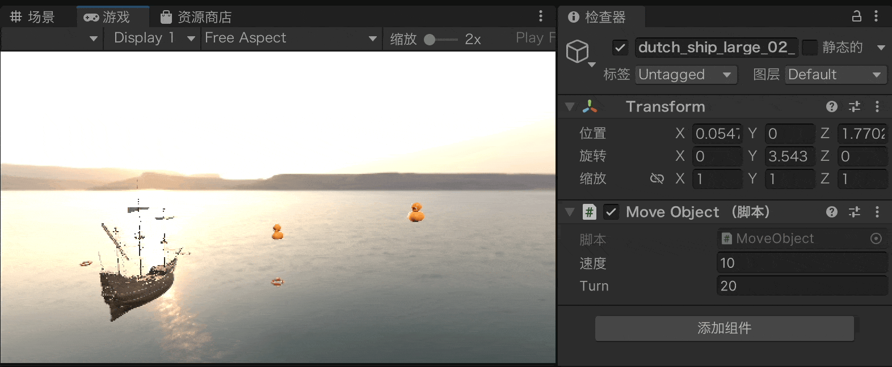
核心要求
- 用
Time.deltaTime保证"与帧率无关"的匀速——换台电脑快慢一致 - 速度、角速度（Turn）用
public暴露到 Inspector，能现场调快慢
public 变量的默认值，场景里已挂的组件不会跟着变（Inspector 里还是旧值）。把该脚本组件移除后重新添加，或点组件右上角 ⋮ → Reset，新值才会生效。进阶挑战：在绕圈上加判断
- 基础实现就是"匀速绕圈"：用「5. 拓展」的两种写法之一，先把它跑通。
- 进阶不换运动方式，只在绕圈代码里加逻辑判断——碰到边界就掉头、转满一圈就换圆心，轨迹自然长出新花样。下面两种写法可以直接改着用：
① 绕圈 + 上下浮沉：高度用变量存着，用 if 判断上下限就掉头，船像在浪里一起一伏（在「5. 拓展」②的代码上加 3 行判断）：
public float speed = 10f; // 与「5. 拓展」相同：每秒移动大小（米 / 秒）
public float turn = 20f; // 与「5. 拓展」相同：角速度（度 / 秒）
float radius; // 圆半径（由上面两个算出）
Vector3 center; // 圆心
float angle = 0; // 已经转过的角度
float y; // 船当前高度
float vy = 1f; // 垂直方向：1 上升，-1 下降
void Start() {
// 和「5. 拓展」②一样：算出半径和圆心
radius = speed / (turn * Mathf.Deg2Rad);
center = transform.position + transform.right * radius;
y = transform.position.y;
}
void Update() {
// ① 绕圈：x、z 按角度走圆，高度交给变量 y
angle += turn * Time.deltaTime;
transform.position = center + new Vector3(
-radius * Mathf.Cos(angle * Mathf.Deg2Rad),
y,
radius * Mathf.Sin(angle * Mathf.Deg2Rad));
// ② 逻辑判断：碰到上下限就掉头 —— 船在浪里一起一伏
y += vy * Time.deltaTime;
if (y > 6f) vy = -1f;
if (y < -3f) vy = 1f;
// ③ 船头沿切线一起转
transform.Rotate(0, turn * Time.deltaTime, 0);
}
② 8 字航道：船头转满 360° 就换到另一侧的圆心、同时改成反向转，左右两个圆在起点相切，拼起来正好是一个"8"字：
public float speed = 60f; // 每秒移动大小（米 / 秒）
public float turn = 50f; // 角速度大小（度 / 秒）
float radius; // 圆半径
Vector3 centerR, centerL; // 右侧圆、左侧圆的圆心
Vector3 center; // 当前正在走的那个圆心
float angle = 0; // 从换圆心起转过的角度
float side = 1f; // 1 → 右侧圆，-1 → 左侧圆
float y; // 保持不变的飞行高度
void Start() {
radius = speed / (turn * Mathf.Deg2Rad);
// 两个圆在起点相切：圆心一个在船右侧、一个在船左侧
centerR = transform.position + transform.right * radius;
centerL = transform.position - transform.right * radius;
center = centerR;
y = transform.position.y;
}
void Update() {
angle += turn * Time.deltaTime;
// 逻辑判断：转满一整圈 → 换到另一侧的圆心，同时改成反向转
if (angle >= 360f) {
angle -= 360f;
side = -side;
if (side > 0) center = centerR;
else center = centerL;
}
// 按当前圆心走圆：side 决定从圆心的哪一侧起步
transform.position = center + new Vector3(
-radius * Mathf.Cos(angle * Mathf.Deg2Rad) * side,
y,
radius * Mathf.Sin(angle * Mathf.Deg2Rad));
// 船头沿切线转，转向也跟着 side 翻
transform.Rotate(0, turn * side * Time.deltaTime, 0);
}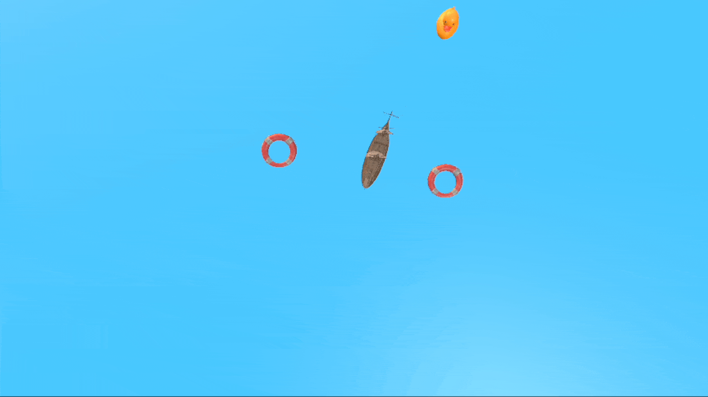
还能怎么变
- 螺旋上升 / 下潜：把 ① 的"碰到上下限就掉头"换成"每转一圈抬高一点"，轨迹就是螺旋线
- 绕圈 + 自转：绕圈的同时再多
Rotate一个角度，船边绕圈边自己打转 - 忽快忽慢：让
turn按Mathf.Sin变化，转弯时快时慢 - 巡逻航道：给
angle数圈数，跑够 3 圈就换一个圆心（换一片水域再绕）
Time.deltaTime），speed / turn 暴露在 Inspector 里能现场调快慢。进阶：在 ① 绕圈 + 上下浮沉、② 8 字航道 中任选一种完成。